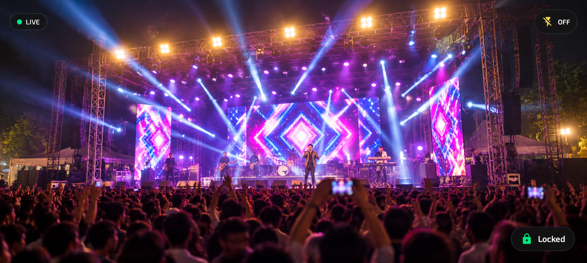

Turn your Android smartphone into a high-quality wireless or USB camera for OBS Studio. Stream video and audio directly into OBS with low latency and professional camera controls.

Everything you need to turn your mobile device into a dedicated, broadcast-grade video and audio source for OBS Studio.
Broadcast crystal-clear 1080p and pristine 4K UHD resolutions directly into your OBS scenes with rich color fidelity and sharp detail.
Silky-smooth high-framerate video capture engineered for live gameplay streaming, tutorials, product reviews, and esports without jitter.
Direct peer-to-peer transmission pipeline optimized for real-time responsiveness over Wi-Fi and USB, eliminating awkward video lag.
Wire-free broadcast freedom across your local 5 GHz Wi-Fi network with automatic UDP device discovery on port 4748.
Plug-and-play wired connectivity via USB tethering or ADB reverse tunneling for rock-solid stability in noisy RF environments.
Native libobs C plugin module (MobCam Source) appearing directly inside your OBS Studio Sources dropdown list.
Embedded in-OBS web dock (Docks > MobCam Controls) to adjust zoom presets (1x, 1.5x, 2x), flash, autofocus, and exposure remotely.
High-fidelity 48 kHz stereo microphone capture with microsecond timestamp synchronization feeding directly into the OBS Audio Mixer.
Leverages Android MediaCodec hardware encoders (H.264 / HEVC) paired with native FFmpeg decoding in OBS for optimal CPU performance.
Connect your Android phone to OBS Studio over Wi-Fi or wired USB in under two minutes.
Download and launch MobCam from the Google Play Store on your Android smartphone (Android 8.0 or newer).
Get on Google PlayDownload and run the Windows 64-bit installer setup wizard with OBS Studio closed. The plugin automatically registers inside OBS.
Download InstallerIn OBS Studio, click + under Sources → MobCam Source. Connect via 5 GHz Wi-Fi or USB tethering, enter the 6-digit PIN, and start streaming!
View Setup GuideReal screenshots showcasing the MobCam Android interface and native OBS Studio integration.
Free, native Windows 64-bit installer for OBS Studio 28.0 - 31.0+.
Native x64 C plugin with Inno Setup installer. Automatically verifies OBS Studio prerequisites and installs the native source module and embedded quick controls dock.
A33CD424E25D638B5BA3920264BE76C270F2B61FD7E0014817AEA5D5F84BFEEB
Follow these simple steps to install and configure the MobCam plugin on your PC.
MobCam-OBS-Plugin-v1.0.0-Setup.exe from above.MobCam Source.MobCam's native OBS Studio plugin is open source under the GPL-2.0-or-later license. Developers can explore the C implementation, build from source using CMake, contribute improvements, and report issues.
* Note: The MobCam Android mobile application is distributed separately through the Google Play Store and is not included in the plugin source repository.
Everything you need to know about MobCam, the OBS Studio plugin, and supported features.
127.0.0.1:4747). A wired USB connection provides the lowest possible latency and immune stability against wireless network congestion.
MobCam-OBS-Plugin-v1.0.0-Setup.exe, close OBS Studio, and run the installer. Once complete, open OBS Studio and find MobCam Source under the Sources list.